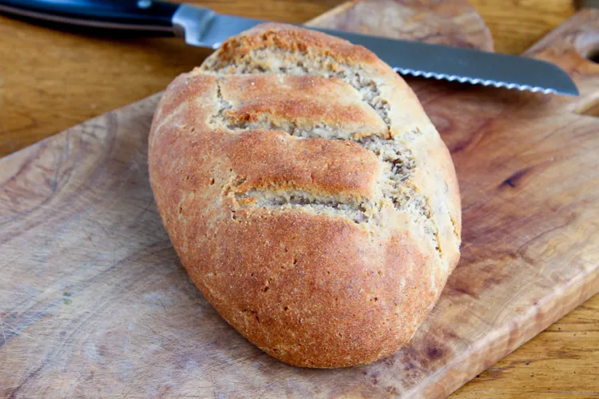

Rustic Bread

Ingredients
- 4 oz Organic Cream Cheese
- 1/2 cup Organic Whole Full-Fat Ricotta Cheese
- 5 Organic Free Range Eggs, room temperature
- 2 tablespoons Organic Apple Cider Vinegar
- 2 cups Organic Almond Flour, Blanched
- 1/4 cup Organic Coconut Flour
- 1 tablespoon Organic Baking Powder
- 4 tablespoons Organic Psyllium Husk Powder
- 1/2 teaspoon Sea Salt
- 1 teaspoon Organic Nutritional Yeast
- Optional Rustic: Caraway Seeds or Italian: Thyme & Oregano
Steps
-
Preheat oven to 350 degrees. Prepare a baking sheet topped with parchment
paper.
-
In a large bowl, whisk together room temperature cream cheese and ricotta
until smooth. Add the room temperature eggs and apple cider vinegar, and
whisk in well.
-
Add all the remaining ingredients and whisk until smooth. The dough will
still feel sticky at this point. Let rest for 5 minutes for the moisture to
be absorbed.
-
With wet hands shape the dough into roughly a 4" x 7" loaf. Place on your
prepared baking sheet and with a small knife, cut 3 diagonal lines on the
top and with thumbs, pull each line a little bit apart (this will make the
bread look artisan!)
-
Bake for 1 hour. The bread is done when a toothpick inserted in the center
comes out clean. Let cool down completely and enjoy!